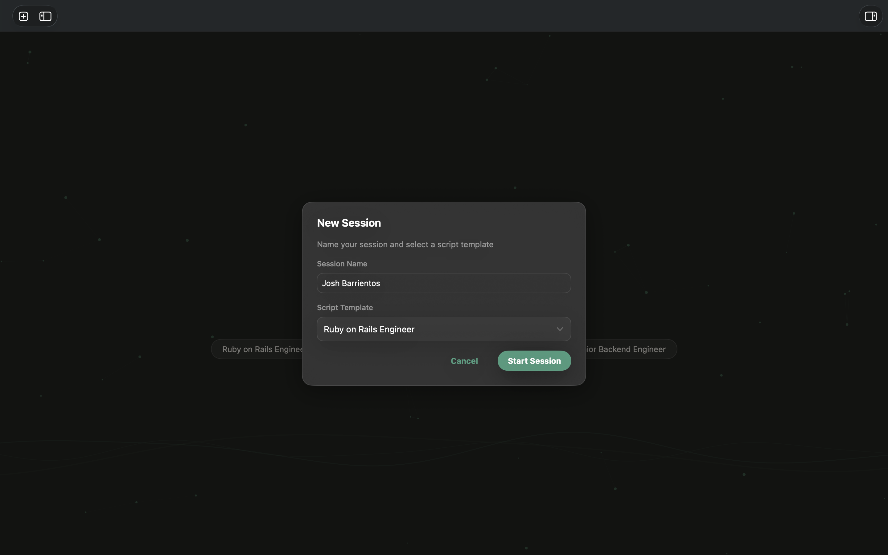
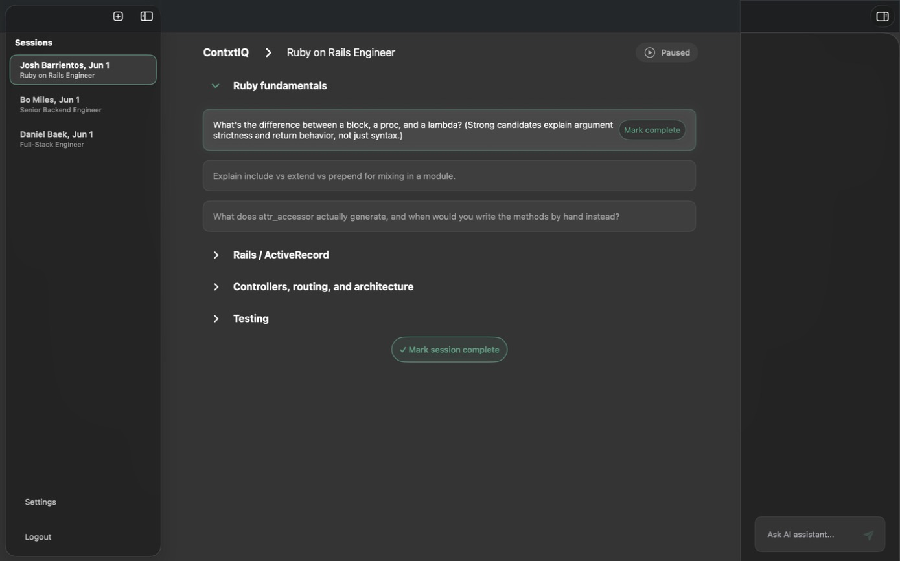
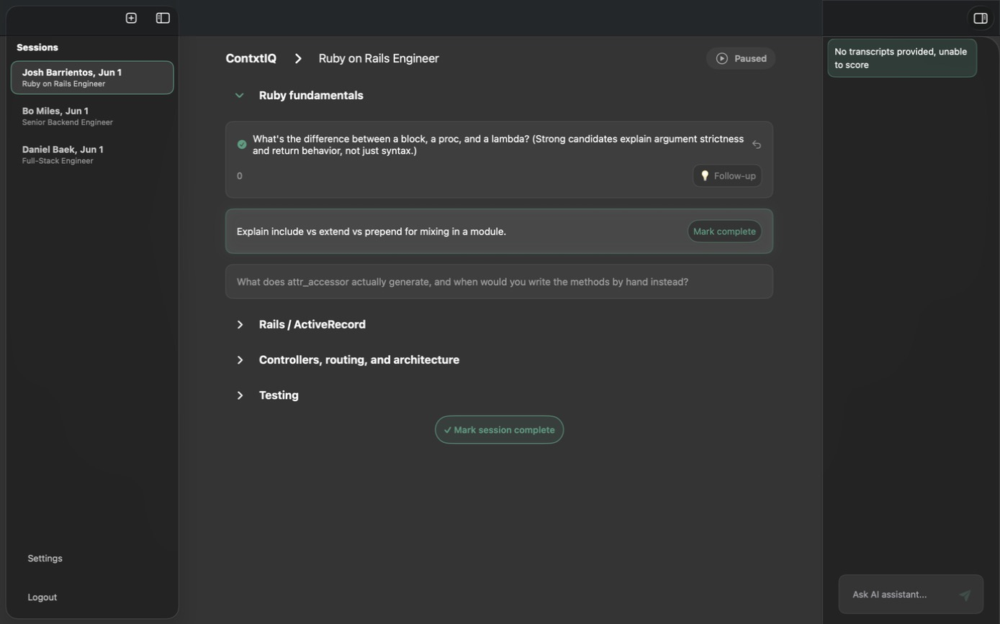

ContxtIQ · Startup · 2025–Present
A desktop app that sits beside recruiters during live screens — grading responses, suggesting follow-ups, and answering questions in-context as the conversation unfolds.
Origin
ContxtIQ started as a question — what would AI support look like if it actually lived inside a live scenario, not after it? The premise was simple: most AI tools summarize after the fact. We wanted to be present during the moment, where decisions are actually made.
That framing was too broad to ship, so we narrowed: script-based roles where there's a known structure to guide, grade, and extend. Recruiting became our first industry poke — the team had felt the pain firsthand. I'd sat through final-round loops with designers who clearly didn't have the skills they'd claimed; the same story played out with engineers and sales hires. The signal from a screening call wasn't surviving into the interview.
The Problem
Screens exist to catch misalignment before the loop. But recruiters are doing three jobs at once — listening, taking notes, and navigating a script — and the judgment they produce is mostly vibes by the end of the day.

The Product
ContxtIQ is a desktop app that runs alongside the screening call. The recruiter picks a script template, starts a session, and works through questions one at a time. Behind the scenes, live transcription feeds a reasoning loop that grades answers, suggests follow-ups, and stays open for ad-hoc questions — all scoped to the candidate in front of you.
01
Live response grading
Each answer scored against the script rubric in real time. Reasoning shows in the right rail so the recruiter can see why, not just the number.
02
Generated follow-ups
After marking a question complete, ContxtIQ proposes the probing question the recruiter didn't have time to think up — grounded in what was just said.
03
In-context assistant
"Ask AI assistant" is open throughout — scoped to the candidate, the script, and the session so every answer arrives with the right context already loaded.
Primary Flow
The whole product bends around the screening hour. Open the app, pick a template, run the call — reasoning and follow-ups assemble themselves as you go.


How it was built
I ran this end-to-end as CXO — not just as a design artifact but all the way into the production repo. The build stayed tight because each stage handed the living prototype forward instead of writing it down on paper.
I built the first prototype in Figma Make to prove the session → question → grading loop felt right before anyone committed code.
Product Development took the prototype and stood up a real desktop application — the first stab at the app that could actually run a session.
Once Claude Code landed, I started building directly against the production repo — pushing PRs to refine interactions, copy, and the grading UI myself instead of handing off specs.
We moved from internal builds to a design partner running real screens. Sessions are being logged live — the loop we sketched in Figma Make is now producing evidence.
30+
Live sessions logged
2
Recruiters live on product
1
Design-partner company
0→1
End-to-end experience lead
What's Next
Near-term: deepen the recruiting experience with the design partner, tighten the grading reasoning, and turn session artifacts into something a hiring manager can actually pick up. Further out: the same live-copilot pattern extends to any script-based role — sales discovery, support triage, clinical intake — anywhere there's a structured conversation and a signal worth preserving.